認識這些圓滾滾的小可愛
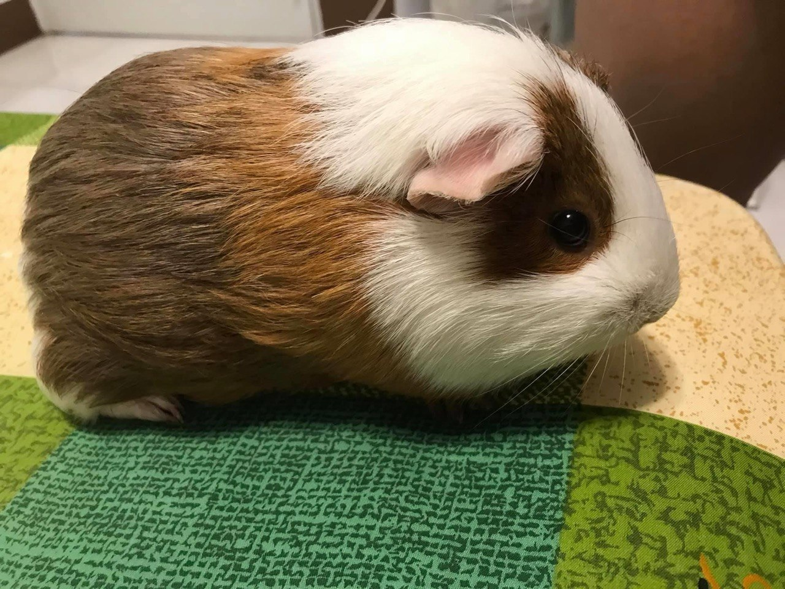
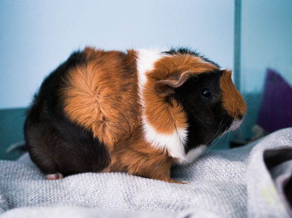
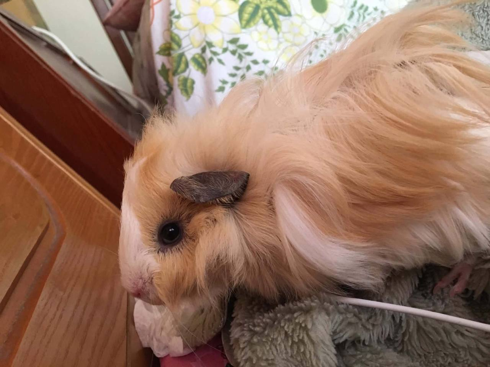
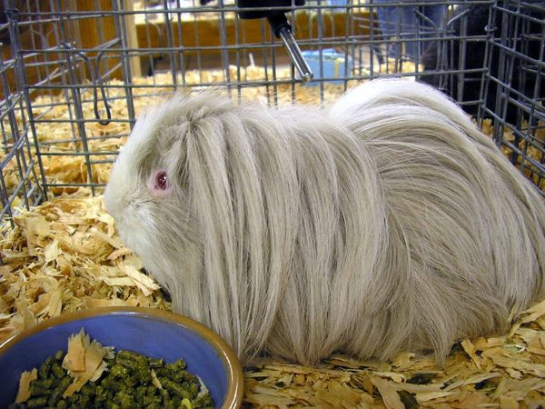
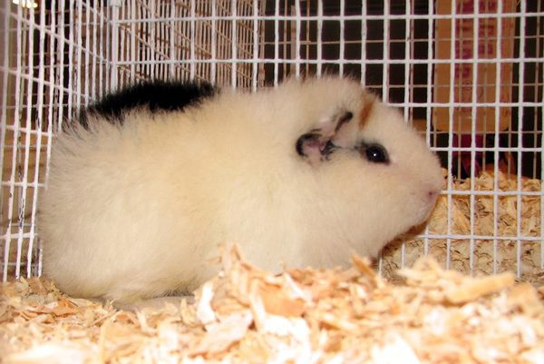
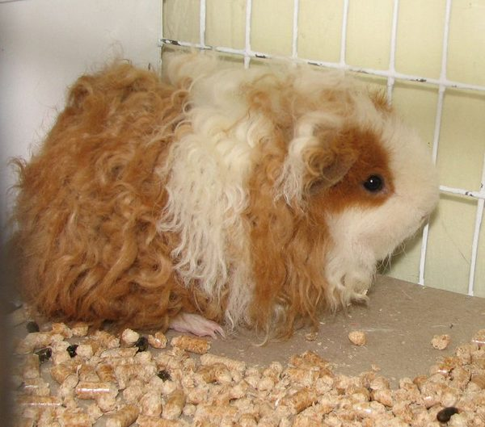
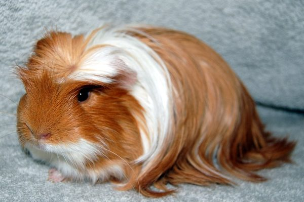
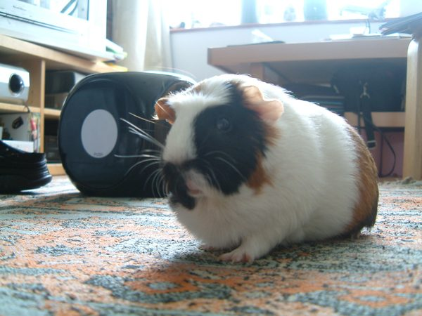
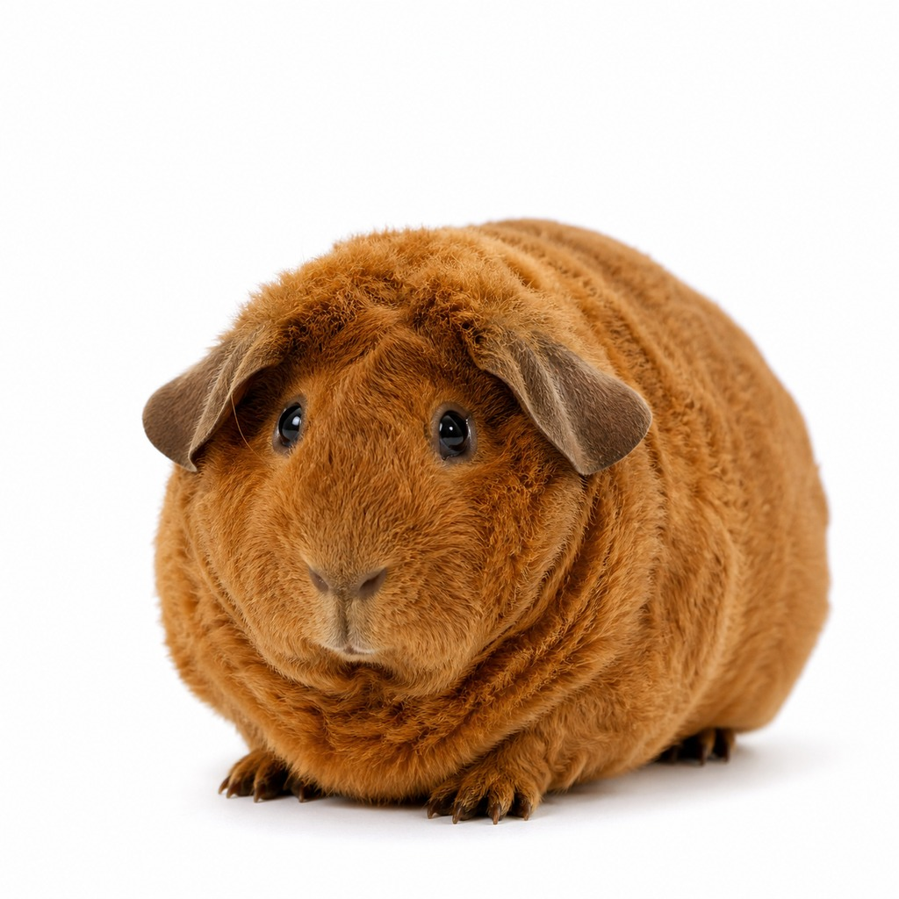
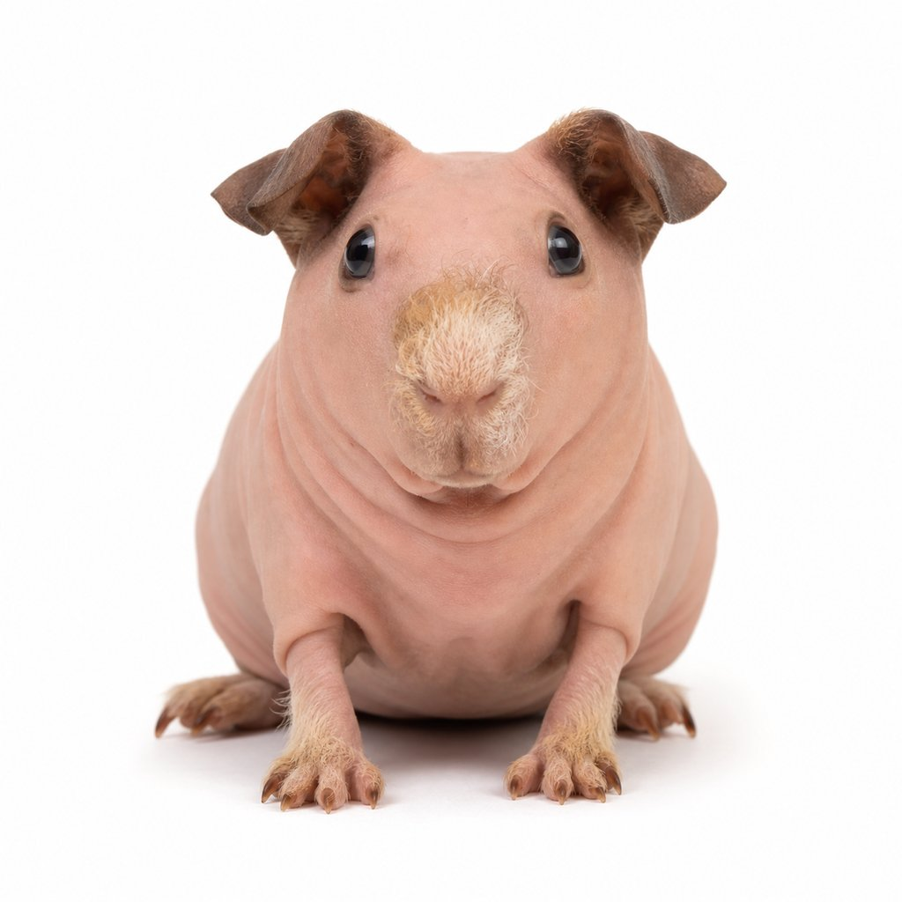
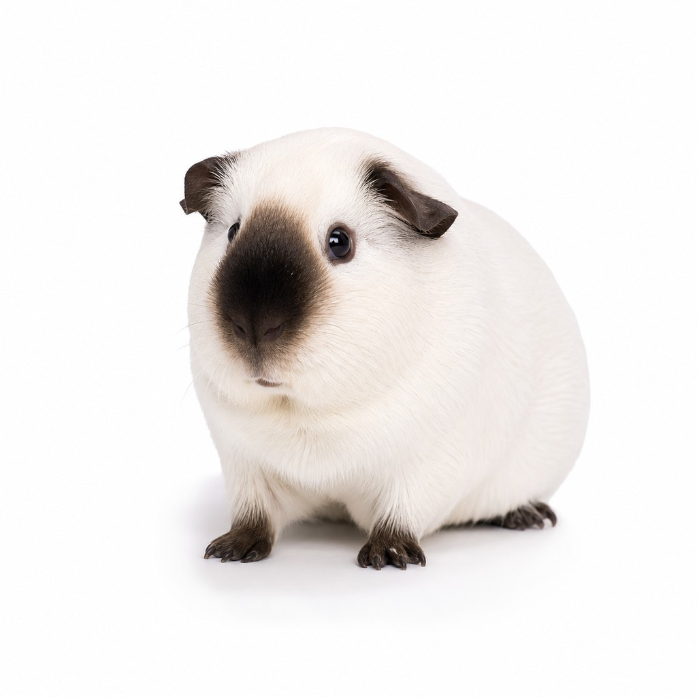
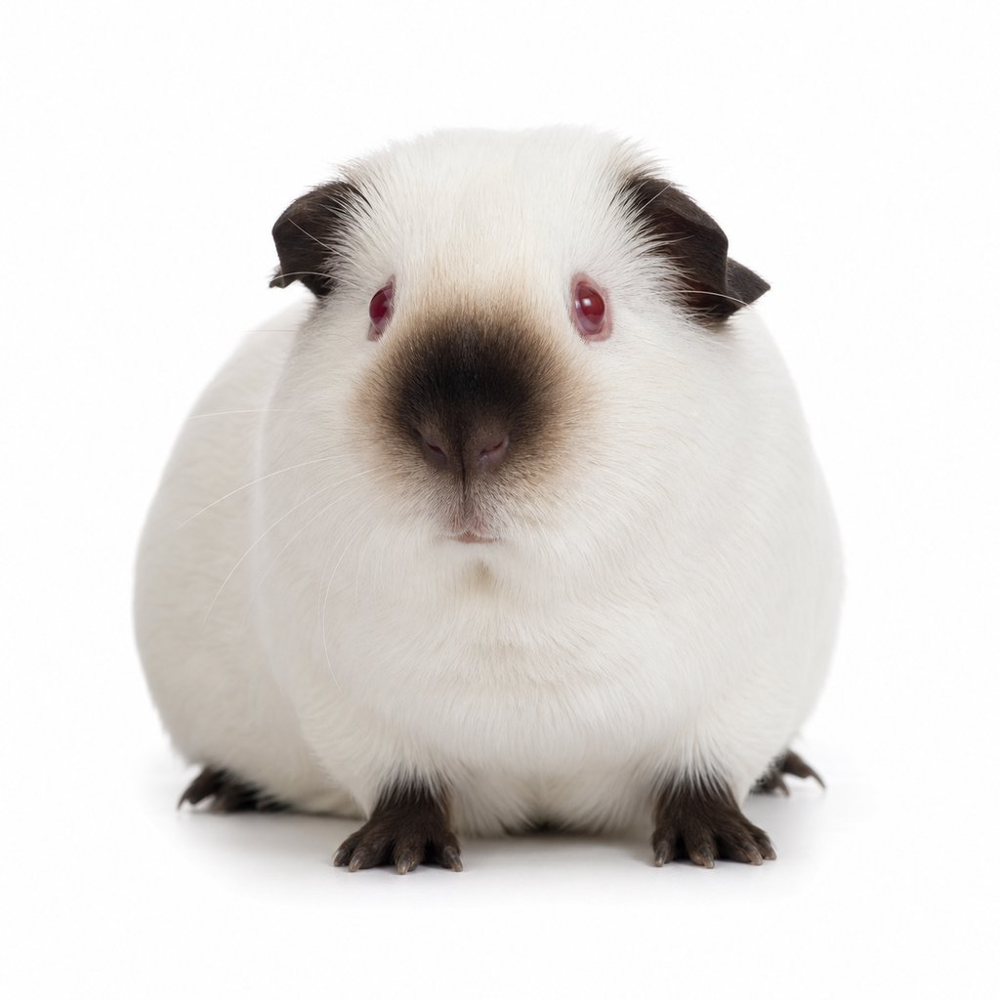
高亢的長聲尖叫，像是在喊「wheeeek wheeeek」。通常在看到食物、聽到冰箱開門或飼主出現時發出。有趣的是，野生天竺鼠不會發出這種聲音——這是專門用來跟人類溝通的叫聲！
😊 興奮 / 討食低沉溫和的連續震動聲，類似貓的呼嚕聲但更低沉。低音調＋放鬆姿勢代表滿足舒適；高音調＋身體僵硬則代表緊張不安。聽音調和觀察肢體語言才能正確判斷。
😊 滿足放鬆 ⚠️ 高音調＝緊張比咕嚕聲更深沉的低頻震動，通常伴隨著屁股搖擺的「求偶舞」。公鼠對母鼠發出的求愛信號，也用於宣示領地地位。看到天竺鼠邊搖屁股邊發出低沉隆隆聲，就是在「撩」了。
💕 求偶 / 宣示地位快速的牙齒碰撞聲「喀喀喀喀」，同時會露出牙齒、身體繃緊面向威脅方向。這是明確的警告信號：「不要靠近我！」如果兩隻天竺鼠互相磨牙，最好立刻分開牠們避免打架。
🚫 憤怒 / 警告聽起來就像小鳥在叫，是天竺鼠最罕見也最神秘的叫聲。發出時牠們會進入類似恍惚的狀態，眼神放空。科學界對此仍無定論，可能與輕微壓力或特殊情緒狀態有關。大部分天竺鼠一輩子都不會發出這種聲音。
❓ 原因不明 / 罕見短促的「嘟嘟嘟」連續聲，類似咕嚕聲但節奏更快更短。通常在安全環境中探索時發出，代表牠正在開心地四處逛逛、心情很好。
😊 開心探索像蛇的嘶嘶聲，表示天竺鼠正在不爽、想要被留獨處。如果持續打擾，下一步可能就是咬人了。尊重牠的空間，等牠冷靜下來再互動。
⚠️ 煩躁 / 不想被打擾高音調的持續呻吟聲，表達不滿或不舒服。可能是被打擾、不喜歡某件事，或是感到身體不適。如果頻繁出現且無明顯原因，建議帶去看獸醫檢查。
⚠️ 不滿 / 可能不適刺耳的高分貝尖叫，代表極度恐懼或疼痛。照顧良好的天竺鼠很少會發出這種聲音。如果聽到，請立即檢查牠是否受傷或受到驚嚇。
🚨 恐懼 / 疼痛